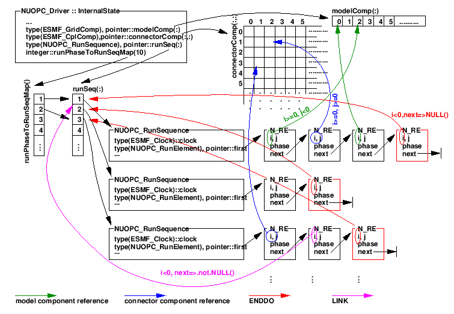

The NUOPC Driver utilizes an internal class to parametrize the run sequence. The NUOPC_RunSequence provides a unified data structure that allows simple as well as complex time loops to be encoded and executed. There are entry points that allow different run phases to be mapped against distinctly different time loops.
Figure 2 depicts the data structures surrounding the NUOPC_RunSequence, starting with the InternalState of the NUOPC_Driver generic component.
Figure 2:
NUOPC_RunSequence class as it relates to the surrounding data structures.
|

|
esmf_support@ucar.edu